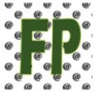

www.educacion.gob.es
 FP a distancia Esta oferta es dirigida especialmente a aquellas personas que por diferentes razones (no solo laborales), no pueden cursar en los centros educativos y en el horario presencial, la Formación Profecional. Por tanto, mayoritariamente será el colectivo de las personas adultas el destinatario de esta modalidad de enseñanza. Toda la información desde la Web: FP online. ¡¡Matricúlate!!
"Orden EDU/2887/2010, de 2 de noviembre, por la que se edtablece el currículo del ciclo formativo de Grado Superior correspondiente al título de Técnico Superior en Desarrollo de Aplicaciones Web."
Técnicas, procedimiento y actitudes relacionadas:
Conceptos soporte relacionados: